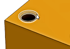
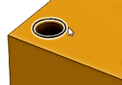
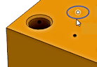

Sélection de face cylindrique
Sélection de face de chanfrein
Détermine ce que vous pouvez sélectionner pour les emplacements de perçage.
Faces sélectionnées - Sélection basée sur le modèle.
|
 |
Sélection de face cylindrique |
Sélection de face de chanfrein |
Points sélectionnés - Sélection basée sur la géométrie.
 |
 |
 |
Sélection d'arête de fonction |
Sélection de point d'esquisse |
Sélection de cercle d'esquisse |
Plage de diamètres – Sélection par taille
Le système évalue le modèle selon les valeurs de diamètre maximum et minimum. Utilisez cette plage de données pour inclure ou exclure certaines tailles de perçage.
Exemple: vous pouvez sélectionner tous les trous dont le diamètre est compris entre 0.250 et -0.2501 pour les perçages, et tous ceux compris entre 0.2505 et -0.2506 pour les alésages.
L'utilisation de sélections basées sur un modèle garantit l'associativité aux éventuelles modifications ultérieures apportées à la fonction.
Remarque: options de pré-perçage
* Si vous sélectionnez la face chanfreinée et modélisée d'un perçage, la hauteur sur le fond (profondeur) sera automatiquement définie sur l'extrémité théorique de l'outil.
* Si vous sélectionnez une plage de diamètres qui inclut tous les perçages, définissez la hauteur sur le fond sur la valeur de largeur du chanfrein.